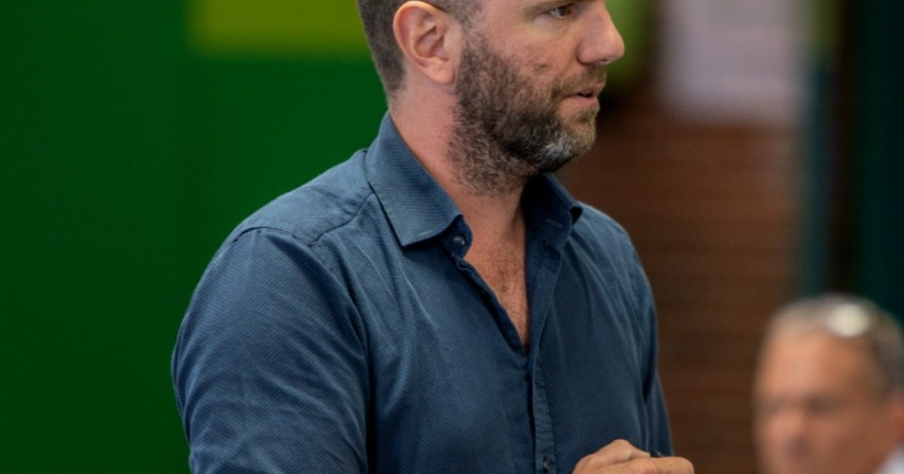

Ét spørgsmål driver alt, hvad vi gør
Kan I se jeres strategi i det, der sker tirsdag kl. 10? Det er ikke et retorisk spørgsmål. Det er prøvestenen på, om strategi er reel — eller blot officiel.
Strategiskskole.dk er bygget op om Tirsdag kl. 10-modellen® — en signaturmodel for strategisk skoleledelse, der tager skoleledere, lederteams og bestyrelser fra spejling af situationen til forankring af det, der vælges. Ikke som et dokument. Som en levende praksis.
Vi er ikke en klassisk konsulentvirksomhed. Vi stiller de spørgsmål, der skaber bevægelse — og vi bliver ved, til strategien kan mærkes i hverdagen.
Tirsdag kl. 10
Kan vi se det i praksis — i møder, roller og hverdagen?
Det er ikke nok at have en god strategi. Og det er ikke nok at have lavet en god plan. Kernen i alt, hvad vi gør, er ét enkelt spørgsmål: Kan vi se de strategiske tiltag i det, der faktisk sker tirsdag kl. 10?
Tirsdag kl. 10 er metaforen for hverdagen — for de møder, de beslutninger og de prioriteringer, der afslører om strategien er reel eller blot officiel. Det er her, ledelse sker. Det er her, vi måler.
Se hele modellen →Seks principper. Ét udgangspunkt.
Tirsdag kl. 10-modellen® er ikke teorineutral. Den bygger på seks principper, der definerer, hvad strategisk skoleledelse er — og hvad det ikke er. De præger alt, hvad vi gør.
Strategi er først reel, når den kan mærkes i praksis
Et strategidokument er ikke en strategi. En strategi er det, der sker tirsdag kl. 10 — i møder, beslutninger og organisering.
Uklarhed er den største kilde til mistrivsel
Utydelige roller, vage prioriteringer og manglende retning er ikke blot ineffektivt. Det koster på arbejdsmiljøet og på tilliden.
Ledelse er design af rammer — ikke kun relationer
En dygtig leder skaber de strukturer, møder og spilleregler, der gør det muligt for andre at lykkes. Det er aktiv, bevidst rammesætning.
Valg er vigtigere end flere initiativer
Skoler, der forsøger at gøre alt, gør ingenting godt nok. At vælge fra er strategi. Det kræver mod — og det skaber fokus.
Små, præcise greb slår store planer
Det er sjældent de store strategiprocesser, der ændrer hverdagen. Det er de præcise, velovervejede greb, der rammer rigtigt og holdes levende.
God organisering skaber bæreevne for de mennesker, der bærer skolen
En velorganiseret skole er ikke bureaukratisk — den er human. Klare rammer, tydelige roller og gode rutiner giver medarbejdere og ledelse overskud til at gøre det, der betyder noget.

Thomas Kjerstein
Thomas Kjerstein er grundlæggeren af Strategiskskole.dk og manden bag Tirsdag kl. 10-modellen®. Han er uddannet lærer fra VIA University College og har tilbragt de seneste 20 år i den frie skoleverden — ni år som lærer på Helgenæs Naturefterskole, otte år som lærer på Feldballe Friskole og senest som viceskoleleder samme sted.
Hans arbejde med strategisk skoleledelse udspringer ikke af teorien, men af praksis: af at have stået i klasseværelset, siddet i ledelsesteamet og forsøgt at skabe retning i en organisation, der aldrig holder stille. Tirsdag kl. 10-modellen® er udsprunget af den erfaring.
Ved siden af skoleverdenen var Thomas i ti år ejer og direktør for Nordic Destination (2014–2024) med fokus på forretningsudvikling og rådgivning inden for turisme og oplevelsesøkonomien — et erhvervsforløb der har skærpet hans blik for strategisk retning, prioritering og organisationsudvikling.
Hans uddannelsesbaggrund er bred og praksisorienteret: Diplom i Ledelse (SmartLearning, 2022–2024), Pædagogisk diplom i Æstetik, Kultur og Læring (DPU), Grundlæggende bestyrelsesansvar (Erhvervsakademi Dania), Projektlederen som facilitator (Teknologisk Institut) og Læreruddannelse (VIA University College). Thomas har derudover arbejdet som både arbejdsmiljørepræsentant og tillidsrepræsentant — erfaringer der har givet ham et indgående kendskab til arbejdspladsens strukturer, medarbejderperspektivet og det organisatoriske samspil mellem ledelse og medarbejdere.
Kontakt: thomas@strategiskskole.dk · 61 65 73 65